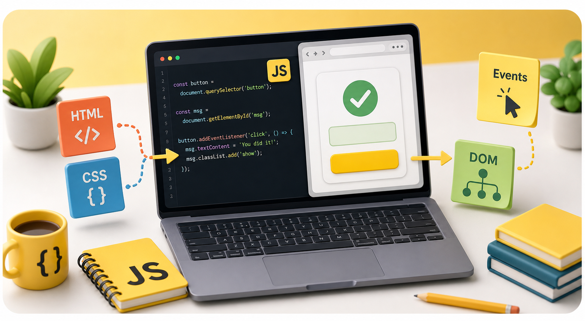

Analogi pemula
Konsep seperti variabel, fungsi, DOM, dan event dijelaskan dengan contoh sehari-hari sebelum masuk ke kode.
Mulai dari menghubungkan script, variabel, kondisi, fungsi, array, DOM, event, form, localStorage, debugging, sampai mini project interaktif pertamamu.

Konsep seperti variabel, fungsi, DOM, dan event dijelaskan dengan contoh sehari-hari sebelum masuk ke kode.
Setiap materi punya contoh HTML, CSS, JavaScript, preview, latihan kecil, quiz singkat, recall, dan debugging konsep.
Materi selesai, skor quiz, recall, debugging, badge, dan dark mode tersimpan otomatis di browser.
Buka materi untuk memahami konsep, lalu pindah ke ruang latihan saat ingin menguji pemahamanmu.